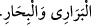

gönderemez. Hâl böyle iken gecenin başında ve sonunda az bir zaman içinde bu nasıl
gerçekleşir?” dediler.
Sultan şöyle dedi: “Ben âlimlerden ‘Kim;
şeklinde salevât gönderirse, on bin defa salevât göndermiş gibi olur.’ diye işitmiştim.
Ben gecenin başında üç defa, gecenin sonunda da üç defa bunu okurum. Böylece altmış
bin defa salevât gönderdiğimi bilirim. Bu durumda İnsanların Efendisi’nin mesajını
getiren bu derviş doğru söylemiştir. Ağlamam da sevinçtendi. Çünkü âlimlerin sözü
doğru idi ve Hz. Peygamber (a.s.) buna şehâdet etmiştir.
“(Allâh’ım, Muhammed’e ve Muhammed’in âilesine her dert ve deva sayısınca
salât eyle.)”
Mevlânâ Şemseddîn Kîşî yaşadığı şehirde veba yayılınca, Hz. Peygamber (s.a.)’i
vâkıasında gördü ve: “Ey Allâh’ın Rasûlü! Bana bir duâ öğret de onun bereketiyle tâun
felâketinden güvende olayım.” dedi. Hz. Peygamber (a.s.) şöyle buyurdu: “Kim bana bu
türden salevât getirirse tâundan emin olur.”
Eğer zamanın âfetlerinden etkilenirsen,
Mübârek Peygamber’den emân dile.
Hâdiseler oku seni hedef alacak olursa,
Hz. Mustafa’nın salevât hisarına sığın.
“(Allâh’ım, Muhammed’e şu ağaçların yaprakları sayısınca salât eyle. Yine
Muhammed’e gül ve nurlar sayısınca salât eyle. Yine Muhammed’e yağmur
damlalarının sayısınca salât eyle. Yine Muhammed’e çöllerin kumları sayısınca salât
eyle. Yine Muhammed’e kara ve deniz canlılarının sayısınca salât eyle.)”
Zahîratü’l-müzekkirîn’de şöyle anlatılır: “Ümmetin sâlihlerinden biri ilkbahar
mevsiminde sahraya çıktı. Ağaçların yeşilliğini, tabiatın canlılığını ve çiçeklerin
görüntüsünü müşâhede etti. Şöyle dedi: